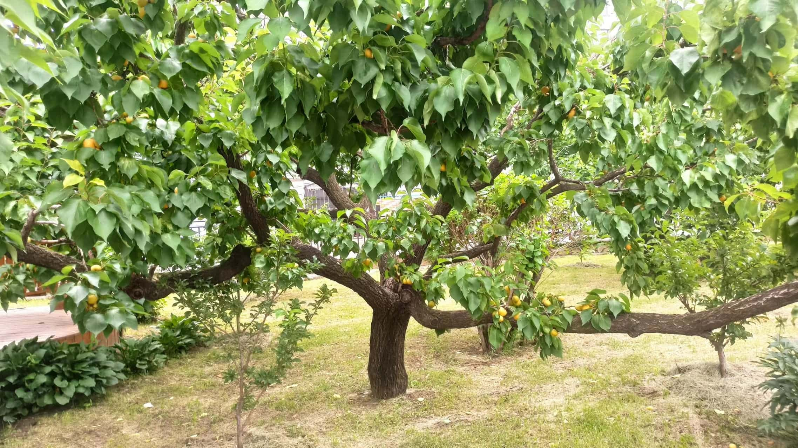
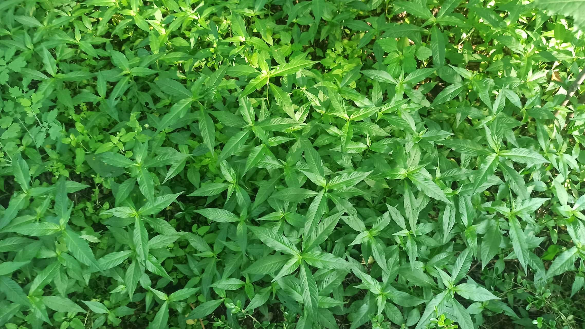
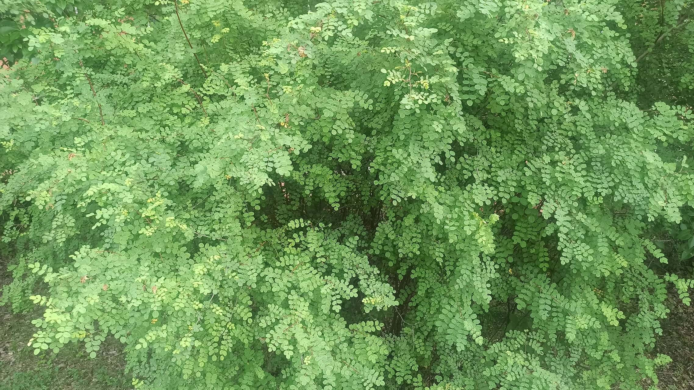

植物目录

狼尾花
以其独特的尾状花序著称，春季盛开时形似狼尾，装点校园角落。

山杏
春季早开花树种，花朵洁白芬芳，果实可食，为校园增添一抹春色。

白车轴草
常见草本植物，三片心形小叶，白色小花，常覆盖地面，形成绿色地毯。
鹅肠菜
水边常见的野菜，叶片细长如鹅肠，既是观赏植物也是可食用的野菜。

水蓼
生长在湿地环境，粉红色小花，茎叶可作药用，具有一定的药用价值。

黄刺玫
春季开花的灌木，黄色花朵鲜艳夺目，枝条有刺，是校园中亮丽的风景线。